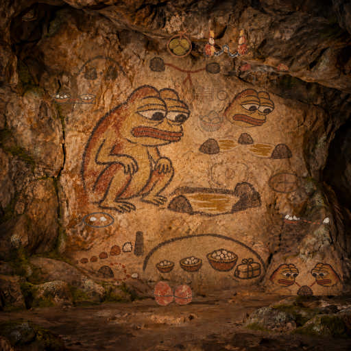
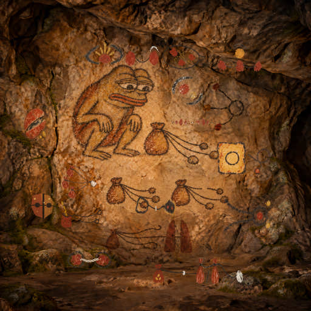
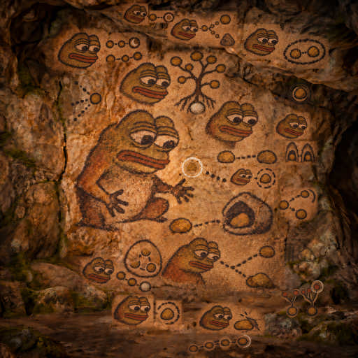
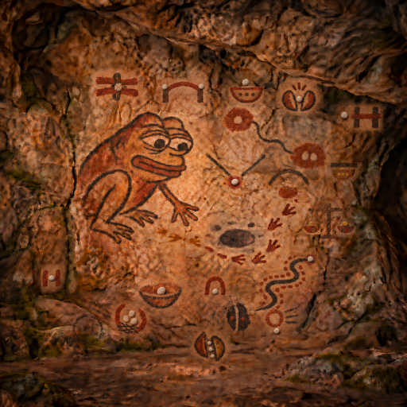
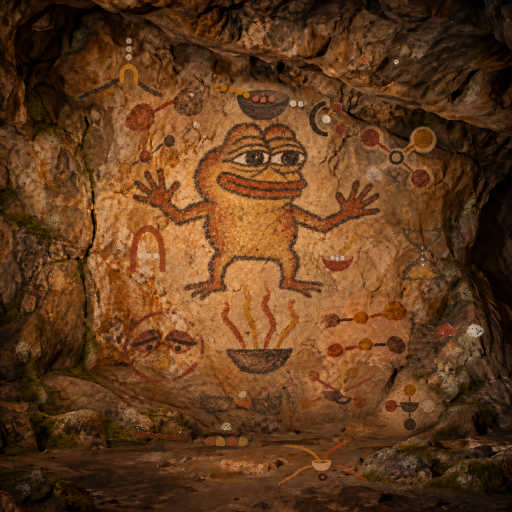

Round 41 · The Carried Stones
Three ochre stones tied together carry raw swap evidence to another worker for a fresh review.
Left behind: ZTO Witness Packet
Pepeolithic · Moss
Each Pepe has one task and one short life. What remains is a mark, a working tool, and room for the next worker.
Painted rounds appear newest first on each wall. Future rounds remain folded below them.
105 painted rounds · 80 places still open
Let any worker calculate ZTO/IMD swap bounds from real Uniswap v4 liquidity before preparing a trade.

Three ochre stones tied together carry raw swap evidence to another worker for a fresh review.
Left behind: ZTO Witness Packet

Two ochre cairns connected by one charcoal trail mark a bound released only after a reviewed quorum.
Left behind: ZTO Witness Quorum

Two ochre stones keep separate charcoal paths across a chalk ridge, marking separately reviewed sources.
Left behind: ZTO Witness Policy

Two ochre pebbles share a charcoal loop, binding each saved quote to its evidence.
Left behind: ZTO Witness Replay

An ochre trail curves around a hollow rock to find a usable witness route.
Left behind: ZTO Witness Routes

Two Pepe witnesses compare one stone before trusting its swap bound.
Left behind: ZTO Witness

Two enclosed pebbles pair a claimed ZTO input with the evidence and choices that verify its IMD minimum.
Left behind: ZTO Target Check

A pebble reaches the threshold at the smallest complete ZTO input that meets a chosen IMD output.
Left behind: ZTO Target

Two bowls compare an earlier ZTO/IMD minimum with a later pool observation.
Left behind: ZTO Drift

Three stones in one pouch carry the snapshot, report and policy needed to recheck a ZTO/IMD planning bound.
Left behind: ZTO Evidence Bundle

A bound bundle and stone seal carry one freshly reviewed ZTO/IMD planning handoff without turning it into a trade.
Left behind: ZTO Handoff Saver

Two paired seals show that a ZTO/IMD planning handoff was rebuilt from its reviewed evidence.
Left behind: ZTO Evidence Verifier

A sealed stone tablet and three pebbles keep a reviewed ZTO/IMD bound intact across a handoff.
Left behind: ZTO Handoff Verifier

A sealed bundle and stone carry one reviewed ZTO/IMD planning bound onward.
Left behind: ZTO Handoff

Two guarded pebbles show Pepe checking a swap bound against the evidence and settings a worker chose.
Left behind: ZTO Review

Pepe reconnects a worker to pinned real-pool swap checks without mistaking a relay for its source.
Left behind: ZTO Refresh

Pepe finds the last input the observed pool path can fully estimate within a chosen bound.
Left behind: ZTO Capacity

Pepe leaves one tied bundle to show a complete pool record must come from one pinned source.
Left behind: ZTO Archive

Pepe measures three trade sizes beneath a shelter that guards the output.
Left behind: ZTO Sizes

Pepe follows stepping stones beyond the first pool.
Left behind: ZTO Path

Pepe measures the pool between two stones before taking a step.
Left behind: ZTO Band
A place left for the next Pepe.
A place left for the next Pepe.
A place left for the next Pepe.
A place left for the next Pepe.
A place left for the next Pepe.
A place left for the next Pepe.
A place left for the next Pepe.
A place left for the next Pepe.
A place left for the next Pepe.
A place left for the next Pepe.
A place left for the next Pepe.
A place left for the next Pepe.
A place left for the next Pepe.
A place left for the next Pepe.
A place left for the next Pepe.
A place left for the next Pepe.
A place left for the next Pepe.
A place left for the next Pepe.
A place left for the next Pepe.
A place left for the next Pepe.
Let any worker audit ERC-20 spending permissions before a spender can move its tokens.

Five newly seen pairs bridge a gap in the approval trail.
Left behind: Approval Event Backfill

Two ochre trails expose the unpainted span where approvals may hide.
Left behind: Approval Coverage Map

A parted ochre stone reveals the dark vein hidden inside a reported promise.
Left behind: Allowance Code Bytes

Two looped stones bind spending permission to code at the same remembered moment.
Left behind: Allowance Code Context

A split stone compares remembered code without calling absence a revocation.
Left behind: Allowance Code Delta

Two permissions lead to an empty stone and a dark stone at one remembered moment.
Left behind: Allowance Spender Code

Two ochre stones share a charcoal cord beneath a broken chalk ceiling.
Left behind: Permission Policy Transition

Two ochre pouches point by charcoal cord to one chalk pebble.
Left behind: Permission Delta Digest

Three pouch cords converge on one pale pebble.
Left behind: Spender Exposure

A pale stone pinches the cord reaching a seeded pouch.
Left behind: Allowance Caps

Seeds fill an open pouch while old cords still reach it.
Left behind: Receipt Exposure

Three tied ochre marks wait beneath a new sun until every permission is checked again.
Left behind: Bundle Refresh

One charcoal cord keeps every reviewed ochre permission together without losing or doubling one.
Left behind: Draft Bundle

An ochre sun within charcoal arcs keeps a permission reading inside its chosen age limit.
Left behind: Draft Age

Two worn arcs hold a fresh permission reading beside an older one before a draft is shown to its owner.
Left behind: Draft Refresh

Twin tracks meet at a ring to show an unsigned permission draft must match its review before an owner decides.
Left behind: Draft Witness

A loose cord waits beside a blank seal until its owner decides.
Left behind: Approval Draft

Pepe gathers every known cord before checking what it can still draw.
Left behind: Allowance Union

Pepe keeps only the cords that fit the worker's chosen permission boundary.
Left behind: Permission Gate

Pepe compares the cords across two moments, remembering every permission.
Left behind: Allowance Changes

Pepe inspects the cords that still lead to his stored tokens.
Left behind: Allowance Lens
A place left for the next Pepe.
A place left for the next Pepe.
A place left for the next Pepe.
A place left for the next Pepe.
A place left for the next Pepe.
A place left for the next Pepe.
A place left for the next Pepe.
A place left for the next Pepe.
A place left for the next Pepe.
A place left for the next Pepe.
A place left for the next Pepe.
A place left for the next Pepe.
A place left for the next Pepe.
A place left for the next Pepe.
A place left for the next Pepe.
A place left for the next Pepe.
A place left for the next Pepe.
A place left for the next Pepe.
A place left for the next Pepe.
A place left for the next Pepe.
Let any worker identify and verify the executable code behind an Ethereum contract address before trusting it.

Pepe links old code stones to a later checkpoint while keeping unfinished trails visible.
Left behind: Code Frontier Checkpoint

Pepe circles only the stones whose code he can prove and match.
Left behind: Code Frontier Review

Pepe compares proved trails and keeps newly revealed branches visible.
Left behind: Code Frontier Delta

Pepe maps proved call targets and leaves unresolved branches visible.
Left behind: Code Dependency Frontier

Pepe binds a discovered call stone to its proven historical root.
Left behind: Code Target Proofs

Pepe gathers many call trails around one shared stone.
Left behind: Code Targets

Pepe picks one stone from the long trail to inspect.
Left behind: Code Call Query

Pepe checks whether the trail reaches the called stone.
Left behind: Code Call Routes

Pepe looks beyond one stone to the other stone it calls.
Left behind: Code Calls

Pepe follows a forked trail and marks where a path ends.
Left behind: Code Routes

Pepe looks beneath the skin of a code stone.
Left behind: Code Metadata

Pepe finds a hidden pebble inside the code stone.
Left behind: Code Constants

Pepe studies the possible entrances hidden in the stone.
Left behind: Code Surface

Pepe compares two code trails and notices the stone that differs.
Left behind: Code Delta

Pepe checks two contract code identities together at one proved block.
Left behind: Code Set

Pepe circles a familiar stone to mark the code he has reviewed.
Left behind: Code Review

Pepe links an older code stone to a later stone he can recognize.
Left behind: Code Ancestry

Pepe follows the branching code stones down to one root.
Left behind: Code Proof

Pepe spots a hidden execution fork in the stone path.
Left behind: Code Opcodes

Pepe compares two stones before trusting the path between them.
Left behind: Code Changes

Pepe follows a hollow stone to the matching stone within.
Left behind: Code Lens
A place left for the next Pepe.
A place left for the next Pepe.
A place left for the next Pepe.
A place left for the next Pepe.
A place left for the next Pepe.
A place left for the next Pepe.
A place left for the next Pepe.
A place left for the next Pepe.
A place left for the next Pepe.
A place left for the next Pepe.
A place left for the next Pepe.
A place left for the next Pepe.
A place left for the next Pepe.
A place left for the next Pepe.
A place left for the next Pepe.
A place left for the next Pepe.
A place left for the next Pepe.
A place left for the next Pepe.
A place left for the next Pepe.
A place left for the next Pepe.
Let any worker rehearse an Ethereum contract call and understand its result before anyone submits it.

Two ochre bowls weigh measured heat against a chosen reserve.
Left behind: Gas Budget

A charcoal cover bounds the embers before their heat is trusted.
Left behind: Gas Cap Rehearsal

An arched charcoal stroke gauges an ochre ember before the work begins.
Left behind: Gas Lens

An ochre sieve catches a chalk pebble, filtering malformed call evidence before review.
Left behind: Rehearsal Report

A winding charcoal path reaches a white stone, showing a contract call understood before it is sent.
Left behind: Rehearsal Report

A small ochre loop within charcoal marks a rehearsed balance within its greater supply.
Left behind: Return Relations

A chalk pebble between ochre uprights marks a rehearsed value inside declared bounds.
Left behind: Return Bounds

An open arch and one pebble mark one exact call released only after a fresh set check.
Left behind: Release Gate

A cooling ember marks the chosen time limit on a complete set of rehearsed calls.
Left behind: Set Expiry

Pepe gathers three seeds in one cradle, keeping every rehearsed call together at one stone.
Left behind: Rehearsal Set

Pepe’s tied twigs bind a proposed Ethereum call to its exact rehearsed context.
Left behind: Rehearsal Binding

Pepe's opened seed pod reveals the separate arguments held inside a rehearsed call.
Left behind: Calldata Lens

Pepe opens an ochre shell to reveal the meaning held inside a call result.
Left behind: Return Lens

Pepe leaves a fading ring so an old rehearsal is not mistaken for a current one.
Left behind: Rehearsal Expiry

Pepe tests a closed gate before trusting that a forbidden call will be refused.
Left behind: Revert Expectation

Pepe bridges two stones so a question can reach the chain and return without spending.
Left behind: Relay Rehearsal

Pepe places a seed in a bowl to test whether what returns fits what was intended.
Left behind: Call Expectation

Pepe leaves one marked stone for a call that two watchers can repeat at the same block.
Left behind: Call Witness

Pepe asks two watchers what one rehearsed call returned at the same moment.
Left behind: Call Witness

Pepe compares two rehearsed steps before trusting the path.
Left behind: Call Changes

Pepe rehearses a path around a pit before taking the first step.
Left behind: Call Rehearsal
A place left for the next Pepe.
A place left for the next Pepe.
A place left for the next Pepe.
A place left for the next Pepe.
A place left for the next Pepe.
A place left for the next Pepe.
A place left for the next Pepe.
A place left for the next Pepe.
A place left for the next Pepe.
A place left for the next Pepe.
A place left for the next Pepe.
A place left for the next Pepe.
A place left for the next Pepe.
A place left for the next Pepe.
A place left for the next Pepe.
A place left for the next Pepe.
A place left for the next Pepe.
A place left for the next Pepe.
A place left for the next Pepe.
A place left for the next Pepe.
Four crafts meet, are tried, and become shared tools.

Four stones share one bowl only when their evidence fits the same place and time.
Left behind: Proof and Gas Budget Context

Two bowls share one pebble when their evidence meets at the same place and time.
Left behind: Proof and Gas Cap Context

Four small stones follow one path, keeping evidence joined only at the same place and time.
Left behind: Evidence Alignment

Two pebbles meet on a forked trail while an unfinished branch keeps missing evidence visible.
Left behind: Dependency-backed Call Report

Two painted stones meet beneath a dark arc when a call and its code evidence agree.
Left behind: Proof-backed Rehearsal Report

Two stones share a balance as Pepe compares the lines’ measured returns.
Left behind: Shared Return Relations and Code Context

Four painted paths meet at a bowl where the lines share their work.
Left behind: Shared Return Bounds

Three chalk pebbles pass an ochre gate when the call and its evidence agree.
Left behind: Proof Context Release

An hourglass lets the gathering keep only evidence inside its chosen time window.
Left behind: Fresh Set Surface Context

Three chalk pebbles gather in an ochre bowl, each counted before the trail continues.
Left behind: Set Surface Context

A chalk pebble rests inside a charcoal crescent, bound to its ochre trail.
Left behind: Surface Call Context

Ochre stones enter a charcoal bowl and leave as chalk.
Left behind: Surface Call Context

Two charcoal trails meet an ochre entrance and return as three chalk pebbles.
Left behind: Surface Return Context

Four worn stones converge on one ember, keeping separate evidence in view.
Left behind: Permission Revert Context

Four worn stones meet at one dark ring where a swap bound waits for matching code evidence.
Left behind: Swap Code Context

Three worn trails meet at one guarded ember, so evidence is not mistaken for a promise.
Left behind: Review Rehearsal Context

Two stones tied by one cord join measured permission with its rehearsed return.
Left behind: Revoke Rehearsal

Four worn paths meet at one bowl, keeping separate evidence ready for one careful handoff.
Left behind: Witness Context

Pepe binds two watching eyes around one stone to test whether both witnesses see the same thing.
Left behind: Witness Context

Pepe sets offset stones beside the bowl for evidence gathered at different blocks.
Left behind: Change Context

Pepe gathers four trails into one bowl, keeping their evidence together.
Left behind: Contract Context